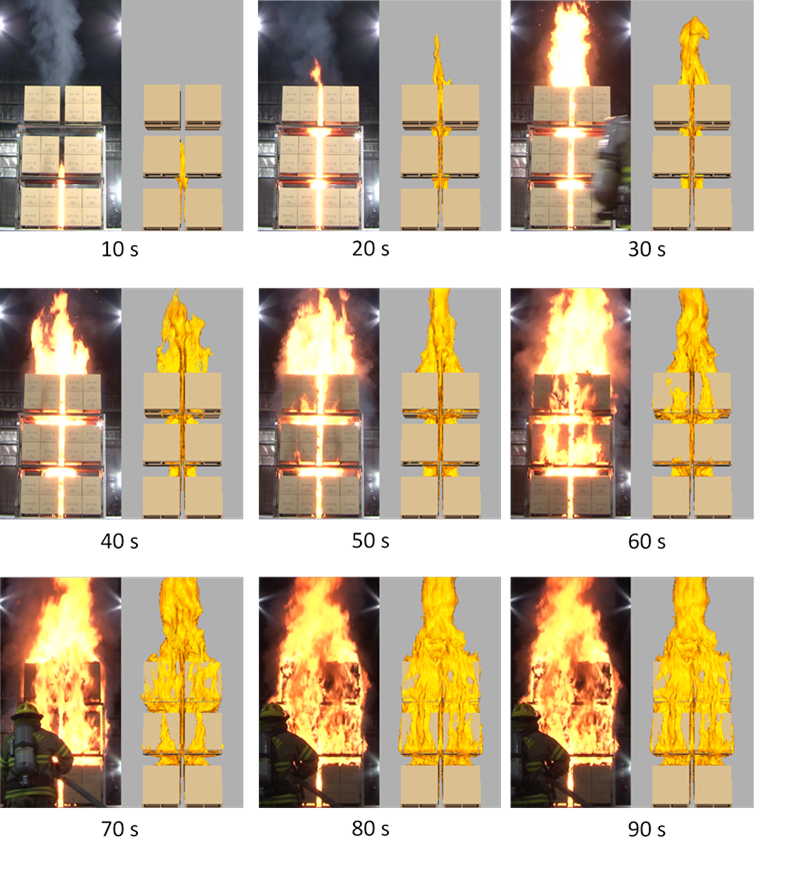

Predictive CFD Modeling for Industrial Fire and Suppression – Progress and Challenges
Monday, February 3, 2020
12:00-13:00, 3110 Etcheverry Hall
Dr. Yi Wang
(FM Global, Research Division)
Abstract: Accidental fire is the most costly peril for commercial and industrial facilities, with the total fire loss equal to the combined losses due to all natural hazards. The technical complexity related to the highly-coupled physical and chemical processes in fire and suppression has restricted the industrial fire protection solution to be mostly dependent on full-scale testing and empirical analysis. The early CFD fire modeling work has been limited to only a small part of the practical fire problem, such as smoke transport of a pre-determined fire size. This talk will present the recent progress that enables fully-coupled fire growth and suppression simulations. The sub-models include turbulent diffusion combustion, convective and radiative heat transfer, solid fuel pyrolysis, droplet atomization and transport, surface film flow and fuel suppression, etc. It will be demonstrated that a validated CFD model has been applied to industrial fire hazard evaluation and suppression designs, either along with experiments or solely by itself as a predictive tool. On-going research tasks and future challenges, especially those related to thermal fluids, will be highlighted.
|  |
Bio: Dr. Yi Wang received his Ph.D. in 2005 in Mechanical Engineering from the University of Maryland, College Park. His research focus has been high-performance CFD modeling of fire related phenomena. He is currently the manager of the Fire Dynamics Group at FM Global, where he oversees the research activities of material flammability, fire dynamics and testing, as well as CFD fire modeling. Dr. Wang serves on the editorial boards of Fire Safety Journal, Fire Technology, Fire and Materials. He is also a committee member of the International Association of Fire Safety Science (IAFSS).